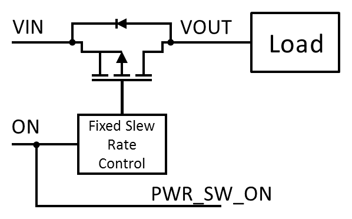

The SLG46116 includes a P-FET Power Switch designed for load switching applications. The P-FET Power Switch contains a 28.5mΩ RDSON, 1 A P-ch MOSFET with fixed slew rate control. The P-FET Power Switch can be controlled internally via the ON digital input of the P-FET Power Switch component in GreenPAK Designer, allowing the user to generate integrated mixed-signal control circuits, or externally via PWR_SW_ON (PIN 4).
When configured to be controlled internally, PWR_SW_ON (PIN 4) is configured as Push-Pull output.
When configured for external control, PWR_SW_ON (PIN 4) is configured as Low voltage digital input (LVDI) and can be used as an input to other integrated components.
The P-FET Power Switch need not be used in the same voltage domain as VDD. However, when VIN is not tied to VDD, using a large pull-down resistor on PWR_SW_ON (PIN 4) is recommended to prevent current from flowing through the P-FET Power Switch while the device is not powered.

Figure 1. P-FET Power Switch with fixed slew rate control